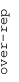
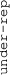

These results are also available as PDF and EPS documents.
Depending on your display resolution, scrolling or zooming may be necessary.
|  |
| 3 |
| 0 |
| -3 |
|  |
| MODULE_433 MODULE_433 | |||||||||||
| MORF_WNT1 MORF_WNT1 | |||||||||||
| GNF2_MLF1 GNF2_MLF1 | |||||||||||
| MORF_MAP2K7 MORF_MAP2K7 | |||||||||||
| MORF_IL4 MORF_IL4 | |||||||||||
| MORF_IFNA1 MORF_IFNA1 | |||||||||||
| MODULE_455 MODULE_455 | |||||||||||
| MODULE_223 MODULE_223 | |||||||||||
| MODULE_146 MODULE_146 | |||||||||||
| MODULE_289 MODULE_289 | |||||||||||
| MODULE_113 MODULE_113 | |||||||||||
| MODULE_316 MODULE_316 | |||||||||||
| CAR_HPX CAR_HPX | |||||||||||
| GNF2_DNM1 GNF2_DNM1 | |||||||||||
| GNF2_TM4SF2 GNF2_TM4SF2 | |||||||||||
| MODULE_121 MODULE_121 | |||||||||||
| GNF2_RAB3A GNF2_RAB3A | |||||||||||
| MORF_KDR MORF_KDR | |||||||||||
| MORF_CD8A MORF_CD8A | |||||||||||
| MODULE_122 MODULE_122 | |||||||||||
| MODULE_199 MODULE_199 | |||||||||||
| MODULE_85 MODULE_85 | |||||||||||
| GNF2_MMP1 GNF2_MMP1 | |||||||||||
| MODULE_92 MODULE_92 | |||||||||||
| MORF_LCAT MORF_LCAT | |||||||||||
| MORF_MAP3K14 MORF_MAP3K14 | |||||||||||
| GNF2_KISS1 GNF2_KISS1 | |||||||||||
| GNF2_TIMP2 GNF2_TIMP2 | |||||||||||
| GNF2_MMP11 GNF2_MMP11 | |||||||||||
| GNF2_IGFBP1 GNF2_IGFBP1 | |||||||||||
| GNF2_EGFR GNF2_EGFR | |||||||||||
| GNF2_CDKN1C GNF2_CDKN1C | |||||||||||
| MORF_CDH4 MORF_CDH4 | |||||||||||
| MORF_CTSB MORF_CTSB | |||||||||||
| MORF_PTPRR MORF_PTPRR | |||||||||||
| GNF2_MYL3 GNF2_MYL3 | |||||||||||
| MODULE_375 MODULE_375 | |||||||||||
| MODULE_329 MODULE_329 | |||||||||||
| CAR_IGFBP1 CAR_IGFBP1 | |||||||||||
| MODULE_111 MODULE_111 | |||||||||||
| MODULE_324 MODULE_324 | |||||||||||
| MODULE_267 MODULE_267 | |||||||||||
| MODULE_445 MODULE_445 | |||||||||||
| GNF2_MYD88 GNF2_MYD88 | |||||||||||
| GNF2_ITGB2 GNF2_ITGB2 | |||||||||||
| GNF2_ICAM3 GNF2_ICAM3 | |||||||||||
| GNF2_SELL GNF2_SELL | |||||||||||
| GNF2_CD53 GNF2_CD53 | |||||||||||
| GNF2_DDX5 GNF2_DDX5 | |||||||||||
| GNF2_CCNB2 GNF2_CCNB2 | |||||||||||
| GNF2_CCNA2 GNF2_CCNA2 | |||||||||||
| GNF2_CENPF GNF2_CENPF | |||||||||||
| GNF2_MCM4 GNF2_MCM4 | |||||||||||
| GNF2_CDC20 GNF2_CDC20 | |||||||||||
| GNF2_CDC2 GNF2_CDC2 | |||||||||||
| GNF2_BUB1B GNF2_BUB1B | |||||||||||
| GNF2_HMMR GNF2_HMMR | |||||||||||
| MODULE_239 MODULE_239 | |||||||||||
| GNF2_H2AFX GNF2_H2AFX | |||||||||||
| GCM_CRKL GCM_CRKL | |||||||||||
| GCM_MAP4K4 GCM_MAP4K4 | |||||||||||
| MODULE_126 MODULE_126 | |||||||||||
| GCM_PTK2 GCM_PTK2 | |||||||||||
| MODULE_321 MODULE_321 | |||||||||||
| MORF_PRKAR1A MORF_PRKAR1A | |||||||||||
| GNF2_RFC4 GNF2_RFC4 | |||||||||||
| MORF_ESPL1 MORF_ESPL1 | |||||||||||
| MODULE_183 MODULE_183 | |||||||||||
| MODULE_244 MODULE_244 | |||||||||||
| GCM_BAG5 GCM_BAG5 | |||||||||||
| GNF2_PAK2 GNF2_PAK2 | |||||||||||
| GNF2_BNIP2 GNF2_BNIP2 | |||||||||||
| MORF_DNMT1 MORF_DNMT1 | |||||||||||
| MORF_RRM1 MORF_RRM1 | |||||||||||
| GCM_HDAC1 GCM_HDAC1 | |||||||||||
| MODULE_400 MODULE_400 | |||||||||||
| MORF_BCL2L11 MORF_BCL2L11 | |||||||||||
| MODULE_382 MODULE_382 | |||||||||||
| MODULE_68 MODULE_68 | |||||||||||
| MODULE_298 MODULE_298 | |||||||||||
| MORF_RAD54L MORF_RAD54L | |||||||||||
| GNF2_RAN GNF2_RAN | |||||||||||
| GCM_CBFB GCM_CBFB | |||||||||||
| MORF_BUB1B MORF_BUB1B | |||||||||||
| GNF2_FEN1 GNF2_FEN1 | |||||||||||
| GNF2_MCM5 GNF2_MCM5 | |||||||||||
| GNF2_APEX1 GNF2_APEX1 | |||||||||||
| GNF2_DEK GNF2_DEK | |||||||||||
| GNF2_MLH1 GNF2_MLH1 | |||||||||||
| GNF2_RBBP6 GNF2_RBBP6 | |||||||||||
| GCM_HBP1 GCM_HBP1 | |||||||||||
| GCM_DFFA GCM_DFFA | |||||||||||
| GCM_ZNF198 GCM_ZNF198 | |||||||||||
| GNF2_CKS2 GNF2_CKS2 | |||||||||||
| GNF2_MSH6 GNF2_MSH6 | |||||||||||
| MORF_BUB1 MORF_BUB1 | |||||||||||
| MORF_HAT1 MORF_HAT1 | |||||||||||
| MORF_EI24 MORF_EI24 | |||||||||||
| MORF_PAPSS1 MORF_PAPSS1 | |||||||||||
| MORF_CDK2 MORF_CDK2 | |||||||||||
| MORF_UNG MORF_UNG | |||||||||||
| GCM_ERBB2IP GCM_ERBB2IP | |||||||||||
| MORF_TPR MORF_TPR | |||||||||||
| MORF_PHB MORF_PHB | |||||||||||
| MORF_DAP MORF_DAP | |||||||||||
| MORF_TERF1 MORF_TERF1 | |||||||||||
| GNF2_ELAC2 GNF2_ELAC2 | |||||||||||
| MORF_RPA1 MORF_RPA1 | |||||||||||
| MORF_PPP2CA MORF_PPP2CA | |||||||||||
| MODULE_57 MODULE_57 | |||||||||||
| MORF_BECN1 MORF_BECN1 | |||||||||||
| MORF_USP5 MORF_USP5 | |||||||||||
| GCM_CHUK GCM_CHUK | |||||||||||
| MORF_CDC10 MORF_CDC10 | |||||||||||
| GCM_MLL GCM_MLL | |||||||||||
| GCM_MYST2 GCM_MYST2 | |||||||||||
| MORF_RPA2 MORF_RPA2 | |||||||||||
| GCM_UBE2N GCM_UBE2N | |||||||||||
| MORF_RAB1A MORF_RAB1A | |||||||||||
| GCM_RAN GCM_RAN | |||||||||||
| MORF_SS18 MORF_SS18 | |||||||||||
| GCM_GSPT1 GCM_GSPT1 | |||||||||||
| MORF_ATOX1 MORF_ATOX1 | |||||||||||
| MORF_RFC1 MORF_RFC1 | |||||||||||
| MODULE_177 MODULE_177 | |||||||||||
| MORF_PRKDC MORF_PRKDC | |||||||||||
| MORF_RFC4 MORF_RFC4 | |||||||||||
| MORF_PPP1CC MORF_PPP1CC | |||||||||||
| MORF_SMC1L1 MORF_SMC1L1 | |||||||||||
| MORF_MSH2 MORF_MSH2 | |||||||||||
| MORF_PPP6C MORF_PPP6C | |||||||||||
| MORF_CCNF MORF_CCNF | |||||||||||
| MODULE_124 MODULE_124 | |||||||||||
| GNF2_KPNB1 GNF2_KPNB1 | |||||||||||
| GNF2_PA2G4 GNF2_PA2G4 | |||||||||||
| GNF2_HAT1 GNF2_HAT1 | |||||||||||
| GNF2_XRCC5 GNF2_XRCC5 | |||||||||||
| GNF2_TDG GNF2_TDG | |||||||||||
| GNF2_RPA1 GNF2_RPA1 | |||||||||||
| GCM_PPM1D GCM_PPM1D | |||||||||||
| MODULE_403 MODULE_403 | |||||||||||
| GNF2_RAP1B GNF2_RAP1B | |||||||||||
| GCM_MAX GCM_MAX | |||||||||||
| GNF2_RRM1 GNF2_RRM1 | |||||||||||
| GNF2_SMC4L1 GNF2_SMC4L1 | |||||||||||
| GCM_RAB10 GCM_RAB10 | |||||||||||
| MODULE_332 MODULE_332 | |||||||||||
| MODULE_158 MODULE_158 | |||||||||||
| MODULE_125 MODULE_125 | |||||||||||
| GNF2_PCNA GNF2_PCNA | |||||||||||
| GNF2_RRM2 GNF2_RRM2 | |||||||||||
| GNF2_TTK GNF2_TTK | |||||||||||
| MODULE_115 MODULE_115 | |||||||||||
| MODULE_81 MODULE_81 | |||||||||||
| GCM_MSN GCM_MSN | |||||||||||
| MORF_ANP32B MORF_ANP32B | |||||||||||
| MORF_G22P1 MORF_G22P1 | |||||||||||
| GNF2_HDAC1 GNF2_HDAC1 | |||||||||||
| GNF2_EIF3S6 GNF2_EIF3S6 | |||||||||||
| GCM_CSNK2B GCM_CSNK2B | |||||||||||
| GCM_PSME1 GCM_PSME1 | |||||||||||
| GCM_DDX5 GCM_DDX5 | |||||||||||
| MORF_SNRP70 MORF_SNRP70 | |||||||||||
| GCM_RAF1 GCM_RAF1 | |||||||||||
| MORF_RAD21 MORF_RAD21 | |||||||||||
| MORF_PSMC1 MORF_PSMC1 | |||||||||||
| MORF_RAD23B MORF_RAD23B | |||||||||||
| MORF_PSMC2 MORF_PSMC2 | |||||||||||
| MORF_RAB5A MORF_RAB5A | |||||||||||
| MORF_MBD4 MORF_MBD4 | |||||||||||
| MODULE_36 MODULE_36 | |||||||||||
| GNF2_NPM1 GNF2_NPM1 | |||||||||||
| MODULE_159 MODULE_159 | |||||||||||
| MORF_PPP2R5E MORF_PPP2R5E | |||||||||||
| GNF2_DAP3 GNF2_DAP3 | |||||||||||
| GNF2_ST13 GNF2_ST13 | |||||||||||
| GNF2_DENR GNF2_DENR | |||||||||||
| GNF2_UBE2I GNF2_UBE2I | |||||||||||
| MORF_TERF2IP MORF_TERF2IP | |||||||||||
| MORF_EIF4E MORF_EIF4E | |||||||||||
| GCM_PPP1CC GCM_PPP1CC | |||||||||||
| GNF2_CKS1B GNF2_CKS1B | |||||||||||
| GNF2_STAT6 GNF2_STAT6 | |||||||||||
| MORF_REV3L MORF_REV3L | |||||||||||
| MODULE_277 MODULE_277 | |||||||||||
| GNF2_FBL GNF2_FBL | |||||||||||
| MORF_EIF3S6 MORF_EIF3S6 | |||||||||||
| MORF_CTBP1 MORF_CTBP1 | |||||||||||
| MORF_PRDX3 MORF_PRDX3 | |||||||||||
| MORF_UBE2N MORF_UBE2N | |||||||||||
| MORF_ERH MORF_ERH | |||||||||||
| MORF_PPP1CA MORF_PPP1CA | |||||||||||
| GCM_APEX1 GCM_APEX1 | |||||||||||
| GCM_NPM1 GCM_NPM1 | |||||||||||
| MORF_NPM1 MORF_NPM1 | |||||||||||
| GCM_ACTG1 GCM_ACTG1 | |||||||||||
| MORF_NME2 MORF_NME2 | |||||||||||
| MORF_ACTG1 MORF_ACTG1 | |||||||||||
| MORF_TPT1 MORF_TPT1 | |||||||||||
| MORF_EIF4A2 MORF_EIF4A2 | |||||||||||
| MORF_CCNI MORF_CCNI | |||||||||||
| MORF_JUND MORF_JUND | |||||||||||
| GCM_PFN1 GCM_PFN1 | |||||||||||
| MODULE_62 MODULE_62 | |||||||||||
| MODULE_22 MODULE_22 | |||||||||||
| GCM_DENR GCM_DENR | |||||||||||
| MORF_GPX4 MORF_GPX4 | |||||||||||
| GCM_RAD21 GCM_RAD21 | |||||||||||
| MORF_PCNA MORF_PCNA | |||||||||||
| MORF_DAP3 MORF_DAP3 | |||||||||||
| MORF_RAF1 MORF_RAF1 | |||||||||||
| MORF_SP3 MORF_SP3 | |||||||||||
| MORF_MAP2K2 MORF_MAP2K2 | |||||||||||
| MORF_FBL MORF_FBL | |||||||||||
| MORF_MTA1 MORF_MTA1 | |||||||||||
| MORF_AP3D1 MORF_AP3D1 | |||||||||||
| MORF_CUL1 MORF_CUL1 | |||||||||||
| MORF_BMI1 MORF_BMI1 | |||||||||||
| MORF_RAB6A MORF_RAB6A | |||||||||||
| MORF_PTPN11 MORF_PTPN11 | |||||||||||
| MODULE_152 MODULE_152 | |||||||||||
| MORF_GMPS MORF_GMPS | |||||||||||
| MORF_CDC16 MORF_CDC16 | |||||||||||
| MORF_DEAF1 MORF_DEAF1 | |||||||||||
| MODULE_430 MODULE_430 | |||||||||||
| MODULE_484 MODULE_484 | |||||||||||
| MORF_SART1 MORF_SART1 | |||||||||||
| GNF2_TPT1 GNF2_TPT1 | |||||||||||
| GCM_TPT1 GCM_TPT1 | |||||||||||
| GNF2_GLTSCR2 GNF2_GLTSCR2 | |||||||||||
| GCM_CSNK1A1 GCM_CSNK1A1 | |||||||||||
| MODULE_149 MODULE_149 | |||||||||||
| GNF2_CCNA1 GNF2_CCNA1 | |||||||||||
| GNF2_HPX GNF2_HPX | |||||||||||
| GNF2_LCAT GNF2_LCAT | |||||||||||
| MODULE_274 MODULE_274 | |||||||||||
| MODULE_368 MODULE_368 | |||||||||||
| MODULE_162 MODULE_162 |